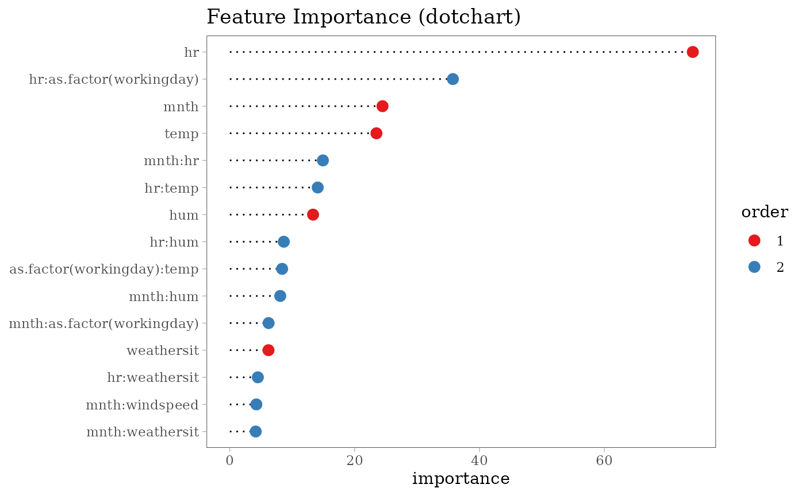
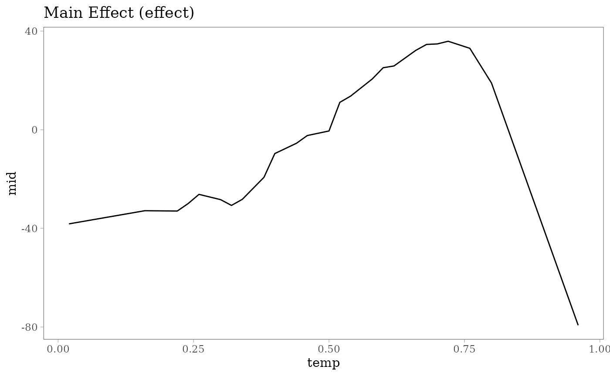
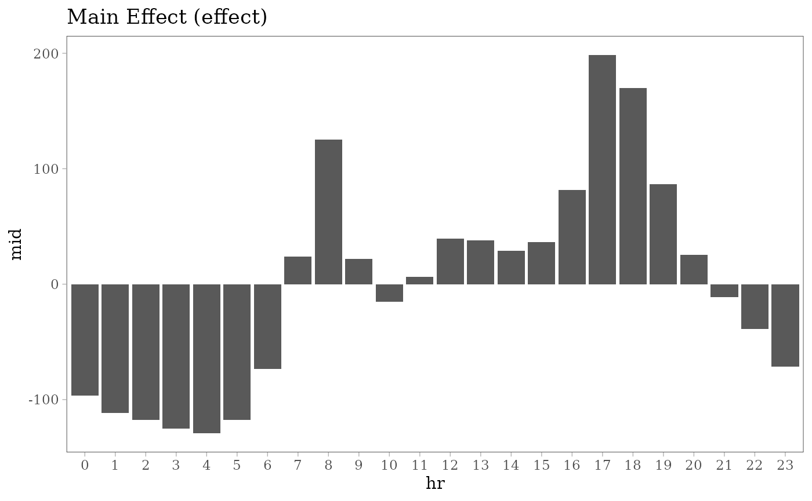
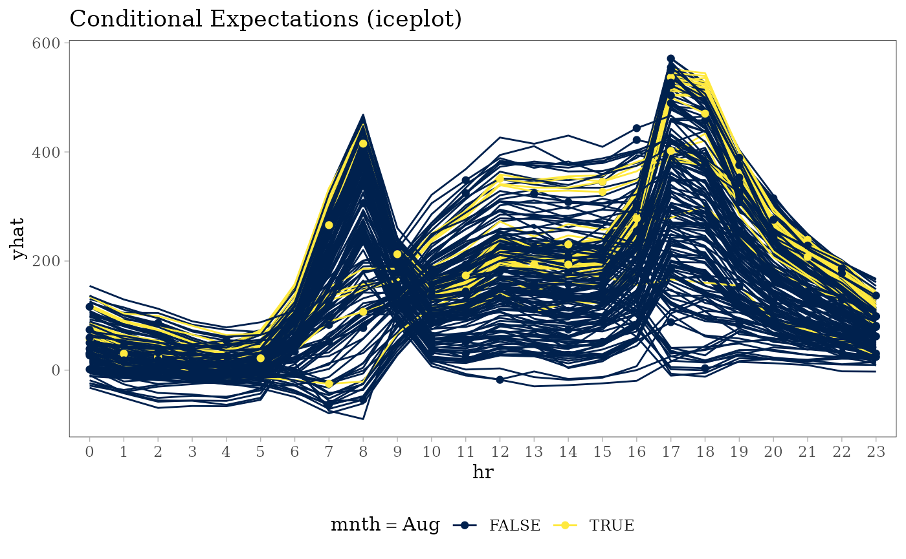

# load required packages
library(midr)
library(ISLR2)
library(ggplot2)
theme_set(theme_midr())
# train a predictive MID model
mid <- interpret(
bikers ~ (mnth + hr + as.factor(workingday) +
weathersit + temp + hum + windspeed)^2, # model formula
data = Bikeshare, # training data
lambda = .01 # smoothing parameter
)
#> 'model' is not passed: the response variable in the data is usedFeature Importance
# compute MID based variable importance
imp <- mid.importance(mid)
# create importance plots
ggmid(imp, theme = "Temps", max = 15) +
ggtitle('Feature Importance (barplot)')
ggmid(imp, type = "dotchart", theme = "Set 1", max = 15, cex = 3) +
ggtitle('Feature Importance (dotchart)')

ggmid(imp, type = "boxplot", theme = "Spectral", max = 15) +
ggtitle('Feature Importance (boxplot)')
Component Functions



ggmid(mid, term = "hr:temp", type = "data",
main.effects = TRUE, theme = "Mako", data = Bikeshare) +
ggtitle('Interaction Effect (data)')
ggmid(mid, term = "temp:windspeed", type = "compound",
main.effects = TRUE, data = Bikeshare) +
ggtitle('Interaction Effect (compound)')
Conditional Expectations
# compute ICE plots
set.seed(42)
ice_rows <- sample(nrow(Bikeshare), 200L)
ice <- mid.conditional(mid, variable = "hr",
data = Bikeshare[ice_rows, ])
# create plots
ggmid(ice, theme = "Cividis", var.color = mnth == "Aug") +
ggtitle('Conditional Expectations (iceplot)') +
theme(legend.position = "bottom")
ggmid(ice, term = "hr:temp", dots = FALSE,
theme = "Temps", var.color = temp) +
ggtitle('Conditional Expectations (iceplot)')
ggmid(ice, type = "centered", alpha = .3,
theme = "midr", var.color = `as.factor(workingday)`) +
ggtitle('Conditional Expectations (centered)') +
theme(legend.position = "bottom")
Prediction Breakdown
# compute MID breakdown for the individual penguins
bd100 <- mid.breakdown(mid, Bikeshare[100L, ])
# create plots
ggmid(bd100, theme = "Tableau 10") +
ggtitle('Prediction Breakdown (waterfall)')

ggmid(bd100, type = "dotchart", theme = "Set 2", cex = 3) +
ggtitle('Prediction Breakdown (dotchart)')